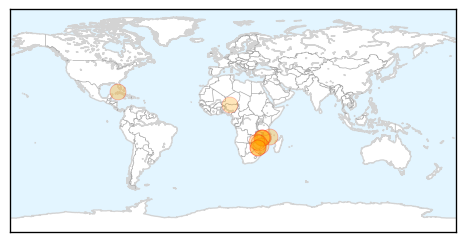
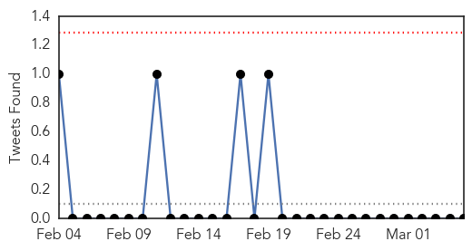
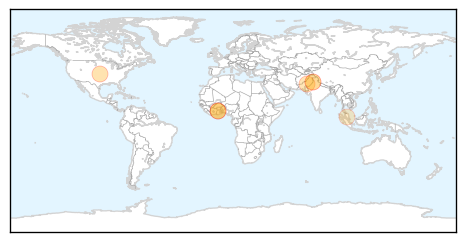
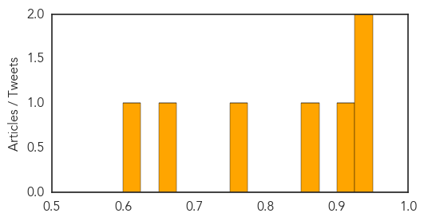

Cholera
30-Day Web Trend
0 alerts, 0 warnings

30-Day Twitter Trend
4 alerts, 0 warnings

Article Locations
Article Confidences

Top Articles:
- 0.998
- 8 cholera cases recorded countrywide
- 0.997
- Mozambique cholera outbreak sickens more than 4500
- 0.995
- Cholera confirmed at SA, Zim border
- 0.994
- Cholera outbreak looms in Zimbabwe capital
- 0.992
- New cholera outbreak kills 5
- 0.992
- New cholera cases in Zimbabwe
- 0.989
- WHO intensifies support for Malawi, Mozambique following cholera outbreak - Xinhua
- 0.988
- Cholera: WHO intensifies support for Malawi
- 0.976
- WHO intensifies support for Mozambique following cholera outbreak
- 0.974
- Blue Helmets in White Uniforms: Cuba’s Doctors in Haiti
- 0.806
- Hand Washing For Healthy Living
Top Tweets:
- 0.763
- cholera confirmed at South Africa/Zimbabwe border http://t.co/VcW0Sce8Us via
Dengue Fever
30-Day Web Trend
0 alerts, 0 warnings

30-Day Twitter Trend
0 alerts, 0 warnings

Article Locations
Article Confidences
Top Articles:
- 0.944
- World: Study: Diseases Mistaken for Malaria
- 0.934
- Study: Diseases Mistaken for Malaria - World
- 0.916
- How Dengue Fever Could Hasten Malaria's Deadly March on Africa
- 0.858
- Stories tagged with "Pakistan"
- 0.751
- All depts ordered to expedite anti-dengue activities
- 0.668
- 4-year delay of Shah Alam Hospital poses problems for nearby hospitals
- 0.616
- All depts ordered to expedite anti-dengue activities
Top Tweets:
-
No tweets found for Mar 05, 2015